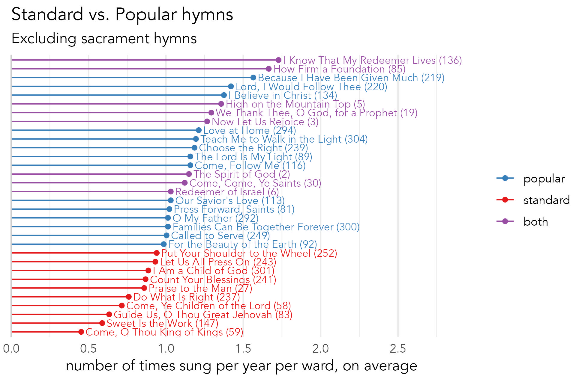

What are the most common hymns?
The most common hymn is
The most common hymns
The most common hymns sung in the church, according to my data, are displayed in Figure 1. Here, sacrament hymns are in gray and other hymns are in black. I’ve shown only the hymns that are sung, on average, one or more times per year per ward. Since I’ve already posted about the sacrament hymns, I’ll focus now on just the non-sacrament hymns.

This figure shows nice list of 22 hymns that are probably well-known by most members of the church, like
Figure 1 also shows how common each of these hymns are.
To contrast this, some sacrament hymns are sung, on average, more than twice a year. Keep in mind that there are only 48 sacrament meetings per year, and 28 sacrament hymns to choose from, so many will have to double up. None of the non-sacrament hymns were sung, on average, more than twice a year.
This list of favorites is useful because if you are a new ward organist, these are the hymns to practice first. Learning these 22 hymns (plus the sacrament hymns) will get you the most mileage. In fact, these 46 hymns account for 43% of the hymns sung in sacrament meeting in this sample. That means that if you learn the hymns shown in Figure 1, you’ll be able to play almost half of the meetings in your ward.
Are these the “standards”?
It is interesting to compare this list of the most popular hymns, which I’m calling the “favorites,” to the list in the back of the hymnal under the section “Hymns for Stake Conference” (page 381). That section lists “standard, well-known hymns” and it is implied that many members would have these hymns memorized. Interestingly, there is not a lot of overlap between these lists. Figure 2 shows which hymns appear in Figure 1 and are usually sung more than once a year (excluding sacrament hymns), and which are the “standards” listed in the back of the hymnal. This time, the hymns in purple are ones that are recommended as “standards” and are indeed sung pretty regularly. The blue ones are what are sung pretty often but are not one of “the standards” listed in the back of the hymnal. The red ones are recommended “standards” that are not as popular. Most of lesser-popular “standards” are still sung pretty regularly, usually at least once every two years. The exception is

However, it should be kept in mind that this isn’t exactly a fair comparison. For one, this list of “standards” is what is recommended for stake conference, which is not the same as sacrament meeting. Also, this list printed in the back of the hymnal is presumably what was recommended in 1985 when this hymnal was first published. What is considered a standard has surely changed in the past few decades. Furthermore, many of the currently most popular hymns were new additions to the 1985 hymnal, including